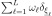
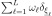

KarhunenLoeveQuadratureFactory¶
(Source code, png, hires.png, pdf)
{kind=link}
{kind=link}
-
class
KarhunenLoeveQuadratureFactory(*args)¶ Computation of Karhunen-Loeve decomposition using Quadrature approximation.
Parameters: domain :
DomainThe domain on which the Fredholm equation is defined.
experiment :
WeightedExperimentThe algorithm used to discretize the integrale defining the Fredholm equation.
basis :
BasisThe basis from which the base functions are taken to define the finite space on which live the approximate eigenfunctions.
basisSize : int
The dimension of the finite approximation space.
mustScale : bool
Flag to tell if a scaling function has to be inserted in the base functions.
threshold : float
The minimal relative amplitude of the eigenvalues to consider in the decomposition wrt the maximum eigenvalue.
Notes
The Karhunen-Loeve decomposition using Quadrature approximation allows to approximate the solution of the second kind Fredholm equation:

with
 a given covariance function,
a given covariance function,  a nonincreasing sequence of nonnegative values (the eigenvalues of the equation) and the associated sequence of eigenfunctions, normalized by
a nonincreasing sequence of nonnegative values (the eigenvalues of the equation) and the associated sequence of eigenfunctions, normalized by  .
.The Karhunen-Loeve quadrature approximation consists in replacing the integrals defining the Fredholm equation by its quadrature approximation counterpart:
Where is a quadrature formula wrt the density function
 such that its support contains
such that its support contains  , ie the discrete measure  is an approximation of the probability measure defined by .
, ie the discrete measure  is an approximation of the probability measure defined by .The eigenfunctions are decomposed into a functional basis :

and the associated coefficients are found using a Galerkin projection on the space generated by .
Examples
Create a Karhunen-Loeve Quadrature factory:
>>> import openturns as ot >>> domain = ot.Interval([-1.0]*2, [1.0]*2) >>> basis = ot.OrthogonalProductPolynomialFactory([ot.LegendreFactory()]*2) >>> basisSize = 10 >>> samplingSize = 20 >>> experiment = ot.LHSExperiment(basis.getMeasure(), samplingSize) >>> mustScale = False >>> threshold = 0.01 >>> factory = ot.KarhunenLoeveQuadratureFactory(domain, experiment, basis, basisSize, mustScale, threshold)
Methods
build(covarianceModel, eigenvalues)Computation of the eigenvalues and eigen functions. getClassName()Accessor to the object’s name. getId()Accessor to the object’s id. getName()Accessor to the object’s name. getShadowedId()Accessor to the object’s shadowed id. getVisibility()Accessor to the object’s visibility state. hasName()Test if the object is named. hasVisibleName()Test if the object has a distinguishable name. setName(name)Accessor to the object’s name. setShadowedId(id)Accessor to the object’s shadowed id. setVisibility(visible)Accessor to the object’s visibility state. -
__init__(*args)¶
-
build(covarianceModel, eigenvalues)¶ Computation of the eigenvalues and eigen functions.
Parameters: C :
CovarianceModel,The covariance model.
ev :
NumericalPointThe eigenvalues
in descending order such that 
Returns: functions :
BasisEigen functions of the covariance model as a basis of functions using
QuadratureLagrangeEvaluationImplementation.Examples
>>> import openturns as ot >>> domain = ot.Interval([-1.0]*2, [1.0]*2) >>> basis = ot.OrthogonalProductPolynomialFactory([ot.LegendreFactory()]*2) >>> basisSize = 10 >>> samplingSize = 20 >>> experiment = ot.LHSExperiment(basis.getMeasure(), samplingSize) >>> mustScale = False >>> threshold = 0.01 >>> factory = ot.KarhunenLoeveQuadratureFactory(domain, experiment, basis, basisSize, mustScale, threshold) >>> model = ot.AbsoluteExponential([1.0]*2) >>> ev = ot.NumericalPoint() >>> functions = factory.build(model, ev)
-
getClassName()¶ Accessor to the object’s name.
Returns: class_name : str
The object class name (object.__class__.__name__).
-
getId()¶ Accessor to the object’s id.
Returns: id : int
Internal unique identifier.
-
getName()¶ Accessor to the object’s name.
Returns: name : str
The name of the object.
-
getShadowedId()¶ Accessor to the object’s shadowed id.
Returns: id : int
Internal unique identifier.
-
getVisibility()¶ Accessor to the object’s visibility state.
Returns: visible : bool
Visibility flag.
-
hasName()¶ Test if the object is named.
Returns: hasName : bool
True if the name is not empty.
-
hasVisibleName()¶ Test if the object has a distinguishable name.
Returns: hasVisibleName : bool
True if the name is not empty and not the default one.
-
setName(name)¶ Accessor to the object’s name.
Parameters: name : str
The name of the object.
-
setShadowedId(id)¶ Accessor to the object’s shadowed id.
Parameters: id : int
Internal unique identifier.
-
setVisibility(visible)¶ Accessor to the object’s visibility state.
Parameters: visible : bool
Visibility flag.
-